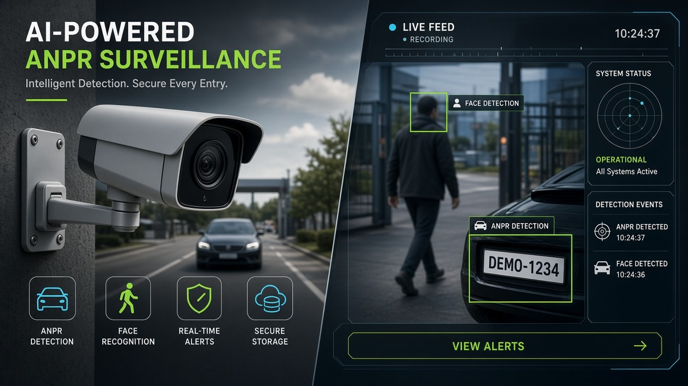

Computer vision · Security operations
ANPR and access intelligence for sites, passage logs, and portfolio-wide operations. Public product window for ramioo.
Plate recognition for controlled access workflows.
Clear event history for review and operations.
Manage locations, lanes, and access points.
One operational view across the wider portfolio.
